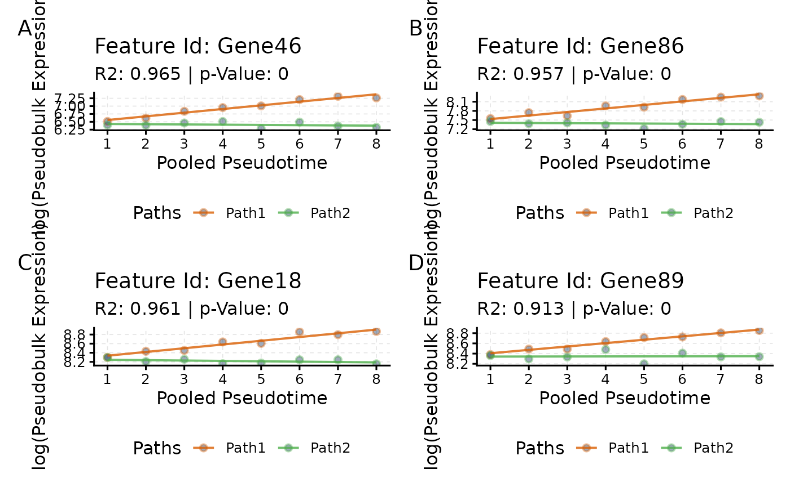
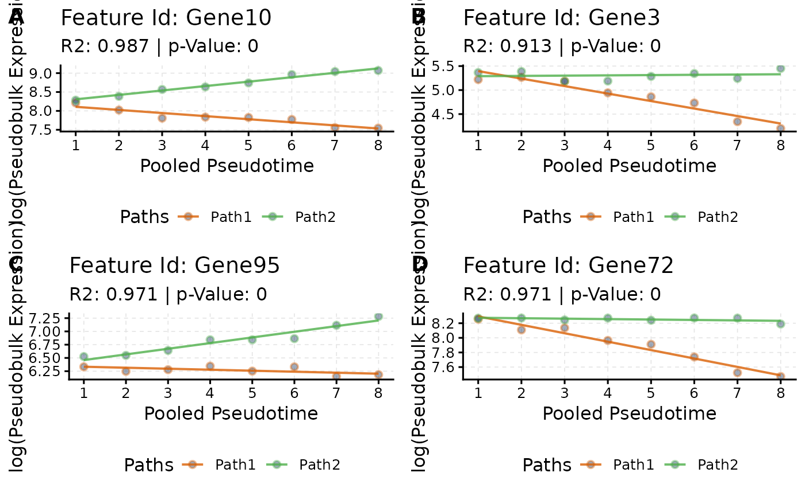

vignettes/scMaSigPro-Class.Rmd
scMaSigPro-Class.RmdAbstract
scMaSigPro is an R package designed for the serial
analysis of single-cell RNA-seq (scRNA-Seq) data along inferred
pseudotime. It builds upon the maSigPro
Bioconductor package to identify genes with significant expression
changes across different branching paths in a pseudotime-ordered
scRNA-Seq dataset. This vignette illustrates the S4 Object of the
scMaSigPro-Class and generic methods.
scMaSigPro is a polynomial regression-based approach
inspired by the maSigPro
Bioconductor package tailored for scRNA-Seq data. It first discretizes
single cell expression along inferred pseudotime while preserving order.
Afterwards it applies the maSigPro
model to pinpoint genes exhibiting significant expression profile
differences among branching paths and pseudotime.
Currently, scMaSigPro is available on GitHub and can be
installed as follows:
# Install BiocManager if needed, then scMaSigPro together with its
# Bioconductor dependencies from GitHub
if (!requireNamespace("BiocManager", quietly = TRUE)) {
install.packages("BiocManager")
}
BiocManager::install("BioBam/scMaSigPro")Here, we will use scmp.ob that already has all the data
inside it. The scmp.ob is included in the package and is
simulated via splatter.
If you are interested in learning how this data is processed, please see
the vignette Basic-Workflow.
scMaSigPro package and the dataset
# Set Seed for Reproducibility
set.seed(123)
# Load Package
library(scMaSigPro)
# Load example data
data("scmp.ob", package = "scMaSigPro")As the object scmp.ob is already processed, we can type
the name of the object in the R console to view various attributes, such
as the dimensions, number of non-flat profiles etc.
## Class: ScMaSigProClass
## nCells: 200
## nFeatures: 100
## Pseudotime Range: 1 100
## Branching Paths: Path2, Path1
## Binned Pseudotime: 1-8(Range), 4.5(Mean),
## Number of bins-> Path1: 8 Path2: 8
## Average bin Size-> Path1: 12 Path2: 13
## Polynomial Order: 1
## No. of Significant Profiles: 50
## No. of Influential Features: 8Sparse & Dense Slots
The scmp.ob object has two slots, Sparse
and Dense both which are of SingleCellExperiment Class.
The Sparse slot contains the raw count data
(i.e. non-pseudo-bulked) and the Dense slot contains the
counts that are pseudo-bulked.
To access the counts we can simply use the eDense() and
eSparse() methods. These two are generic methods and have
simillary functionality to the assays() from the SummarizedExperiment Class.
These methods can be used to get or set the expression counts in the
scMaSigPro object. We will only show first 3 rows and columns of the
Sparse and Dense slot.
## Path1_bin_1 Path1_bin_2 Path1_bin_3
## Gene1 16 24 11
## Gene2 6335 7337 3375
## Gene3 201 245 105## Cell1 Cell2 Cell3
## Gene1 0 2 1
## Gene2 436 371 432
## Gene3 35 13 17Just like the colData() method, the
scMaSigPro object also has cDense() and
cSparse() methods. These are also generics and can get the
cell level information from the Sparse and
Dense slots. Specifically in the case of
cDense(), the bin level information is accessed.
## scmp_binned_pseudotime
## Path1_bin_1 1
## Path1_bin_2 2
## Path1_bin_3 3
## scmp_bin_members
## Path1_bin_1 Cell6|Cell37|Cell47|Cell55|Cell95|Cell102|Cell107|Cell135|Cell136|Cell156|Cell159|Cell190|Cell197|Cell200
## Path1_bin_2 Cell3|Cell7|Cell49|Cell61|Cell77|Cell97|Cell101|Cell119|Cell122|Cell144|Cell157|Cell165|Cell173|Cell175|Cell182
## Path1_bin_3 Cell38|Cell39|Cell108|Cell124|Cell133|Cell146|Cell188
## scmp_bin Path scmp_bin_size scmp_l_bound scmp_u_bound
## Path1_bin_1 Path1_bin_1 Path1 14 1.0 13.2
## Path1_bin_2 Path1_bin_2 Path1 15 13.2 25.5
## Path1_bin_3 Path1_bin_3 Path1 7 25.5 37.8## Cell Batch Path
## Cell1 Cell1 Batch1 Path2
## Cell2 Cell2 Batch1 Path1
## Cell3 Cell3 Batch1 Path1Design Slot
The two most important slots of Design are,
predictor_matrix: A matrix of predictors for the
polynomial regression model. It can be accessed with generic method
predictors().
assignment_matrix: A matrix containing the
hard-assignment of each bin to binned-Pseudotime. It can be accessed
with generic method pathAssign().
Profile Slot
The Profile slot stores the results from the
sc.p.vector(), which performs the global fitting of the
polynomial-GLM and test the significance against the intercept only
model. Below is the brief description of the data stored in
Profile slot.
non_flat: A list of genes with non-flat profiles in pseudotime.
pvalue and adj_p_values: Significance levels.
fdr: False Discovery Rate.
Estimate Slot
The Estimate slot stores the results from the
sc.t.fit(), which performs the optimization of the
polynomial-GLM and selects most significant terms. Below is the brief
description of the data stored in Estimate slot.
significance_matrix: This matrix stores the
p-values for the optimized model, terms of the model and
the coefficient of determination
i.e.
for each of the genes.
coefficient_matrix: This matrix stores the
estimates for all the genes in the significance_matrix. The
coefficient reflect changes associated with each of the terms in
optimized polynomial-GLM.
path_coefficient_matrix: This matrix stores the
estimates for all the genes in the significance_matrix. The
coefficient reflect changes associated with each of the branching
paths.
influential: Stores information of the genes which have influential observations as per cook’s distance.
Significant Slot
Significant slot stores the final results of the
workflow. Once specified significant genes are selected based on the
sc.filter() and sc.cluster.trend. The
Significant stores the gene and the cluster
information.
Parameters Slot
The last slot is the Parameters. It stores all the
parameters used during the analysis. The showParams()
returns all the parameters in a dataframe.
showParams(scmp.ob)[c(10:15), ] # only 5## parameters value
## 10 bin_mem_col scmp_bin_members
## 11 anno_col cell_type
## 12 g 100
## 13 p_value 0.05
## 14 min_na 6
## 15 mt_correction BHqueryCoeff()
In contrast to the sc.filter() function, which
identifies significant genes based on
values and p-values for each group or polynomial term, the
queryCoeff() function enables the extraction of genes based
on their estimated coefficients
()
in a poly-GLM.
A positive value of that there is a positive association between the independent variable and the response variable, meaning as the independent variable increases, the response variable tends to increase. Conversely, a negative value indicates a negative association, implying that an increase in the independent variable is associated with a decrease in the response variable.
In the scMaSigPro framework, each gene deemed
significant is evaluated for its association with the response variable.
When a model includes multiple explanatory terms, such as
(linear) and
(quadratic) components, the overall effect is assessed by considering
the combined influence of these coefficients. This approach allows for a
nuanced understanding of how each term contributes to the response.
Additionally, users can specify an interest in identifying relationships
where all significant terms contribute in the same direction, i.e.,
either all increasing or all decreasing the response. This means that
for a gene to be classified under this category, each term (like
and
must exhibit a consistent effect, either both positively or both
negatively influencing the gene expression.
query parameter
The queryCoeff() function’s query parameter
can be set to one of three values: ‘path’, ‘pseudotime’, or
‘path_pseudotime’, each specifying a different subset of terms in the
poly-GLM for evaluation.
‘query’ = path: This setting focuses on evaluating
the coefficients of terms that describe the influence of each branching
path in the model. It aims to quantify how different paths within the
model contribute to the response variable, independently of other
factors.
‘query’ = pseudotime: When set to ‘pseudotime’, the
function assesses the coefficients of terms that capture the effect of
pseudotime on the response variable. This approach is centered on
understanding how changes over pseudotime affect the response.
‘query’ = path_pseudotime: This option is for
evaluating the coefficients of terms that represent the interaction
effects between pseudotime and branching paths. It examines how the
combined influence of both pseudotime and branching paths impacts the
response variable, focusing on the synergistic or interaction effects
rather than their independent contributions.
Now we will make use of the path_pseudotime and
pseudotime and plot top-4 genes for this tutorial.
# Increasing effect along Pseudotime
pTime_up <- queryCoeff(scmp.ob,
query = "pseudotime",
change = "increasing",
verbose = FALSE
)## Polynomial-GLM Formula: beta0 + beta1*Path2vsPath1 + beta2*scmp_binned_pseudotime + beta3*scmp_binned_pseudotimexPath2
# Order
pTime_up <- pTime_up[order(
pTime_up$betascmp_binned_pseudotime,
decreasing = TRUE
), , drop = FALSE]
# View
head(pTime_up, 4)## betascmp_binned_pseudotime
## Gene46 0.11753328
## Gene86 0.11606199
## Gene18 0.08252258
## Gene89 0.06665634
# Plot
pTime_up.plots <- list()
for (i in rownames(head(pTime_up, 4))) {
pTime_up.plots[[i]] <- plotTrend(scmp.ob, i)
}
# Plot combined
patchwork::wrap_plots(pTime_up.plots[1:4], ncol = 2) +
patchwork::plot_annotation(tag_levels = "A")
# Increasing effect along Pseudotime * Path
pTime_path_up <- queryCoeff(scmp.ob,
query = "pseudotime_path",
change = "increasing",
verbose = FALSE
)## Polynomial-GLM Formula: beta0 + beta1*Path2vsPath1 + beta2*scmp_binned_pseudotime + beta3*scmp_binned_pseudotimexPath2
# Order
pTime_path_up <- pTime_path_up[order(
pTime_path_up$betascmp_binned_pseudotimexPath2,
decreasing = TRUE
), , drop = FALSE]
# View
head(pTime_path_up, 4)## betascmp_binned_pseudotimexPath2
## Gene10 0.1989694
## Gene3 0.1617452
## Gene95 0.1254349
## Gene72 0.1092380
# Plot
pTime_path_up.plots <- list()
for (i in rownames(head(pTime_path_up, 4))) {
pTime_path_up.plots[[i]] <- plotTrend(scmp.ob, i)
}
# Plot combined
patchwork::wrap_plots(pTime_path_up.plots[1:4], ncol = 2) +
patchwork::plot_annotation(tag_levels = "A")
This concludes the vignette of scMaSigPro-Class. Please
refer to other vignettes for more in-depth analysis.
sessionInfo(package = "scMaSigPro")## R version 4.6.1 (2026-06-24)
## Platform: x86_64-pc-linux-gnu
## Running under: Ubuntu 24.04.5 LTS
##
## Matrix products: default
## BLAS: /usr/lib/x86_64-linux-gnu/openblas-pthread/libblas.so.3
## LAPACK: /usr/lib/x86_64-linux-gnu/openblas-pthread/libopenblasp-r0.3.26.so; LAPACK version 3.12.0
##
## locale:
## [1] LC_CTYPE=C.UTF-8 LC_NUMERIC=C LC_TIME=C.UTF-8
## [4] LC_COLLATE=C.UTF-8 LC_MONETARY=C.UTF-8 LC_MESSAGES=C.UTF-8
## [7] LC_PAPER=C.UTF-8 LC_NAME=C LC_ADDRESS=C
## [10] LC_TELEPHONE=C LC_MEASUREMENT=C.UTF-8 LC_IDENTIFICATION=C
##
## time zone: UTC
## tzcode source: system (glibc)
##
## attached base packages:
## character(0)
##
## other attached packages:
## [1] scMaSigPro_0.6.0
##
## loaded via a namespace (and not attached):
## [1] methods_4.6.1 graphics_4.6.1
## [3] sass_0.4.10 generics_0.1.4
## [5] SparseArray_1.12.3 lattice_0.22-9
## [7] digest_0.6.39 RColorBrewer_1.1-3
## [9] evaluate_1.0.5 grid_4.6.1
## [11] grDevices_4.6.1 bookdown_0.48
## [13] fastmap_1.2.0 jsonlite_2.0.0
## [15] Matrix_1.7-5 BiocManager_1.30.27
## [17] SingleCellExperiment_1.34.0 scales_1.4.0
## [19] codetools_0.2-20 textshaping_1.0.5
## [21] jquerylib_0.1.4 abind_1.4-8
## [23] cli_3.6.6 rlang_1.3.0
## [25] BiocStyle_2.40.0 XVector_0.52.0
## [27] Biobase_2.72.0 withr_3.0.3
## [29] utils_4.6.1 cachem_1.1.0
## [31] DelayedArray_0.38.2 yaml_2.3.12
## [33] otel_0.2.0 stats_4.6.1
## [35] S4Arrays_1.12.1 tools_4.6.1
## [37] base_4.6.1 parallel_4.6.1
## [39] BiocParallel_1.46.0 ggplot2_4.0.3
## [41] SummarizedExperiment_1.42.0 BiocGenerics_0.58.1
## [43] vctrs_0.7.3 R6_2.6.1
## [45] matrixStats_1.5.0 stats4_4.6.1
## [47] lifecycle_1.0.5 Seqinfo_1.2.0
## [49] S4Vectors_0.50.3 fs_2.1.0
## [51] IRanges_2.46.0 MASS_7.3-65
## [53] ragg_1.5.2 desc_1.4.3
## [55] pkgdown_2.2.1 bslib_0.12.0
## [57] gtable_0.3.6 glue_1.8.1
## [59] systemfonts_1.3.2 xfun_0.62
## [61] GenomicRanges_1.64.0 MatrixGenerics_1.24.0
## [63] knitr_1.52 farver_2.1.2
## [65] datasets_4.6.1 patchwork_1.3.2
## [67] htmltools_0.5.9 labeling_0.4.3
## [69] rmarkdown_2.32 compiler_4.6.1
## [71] S7_0.2.2